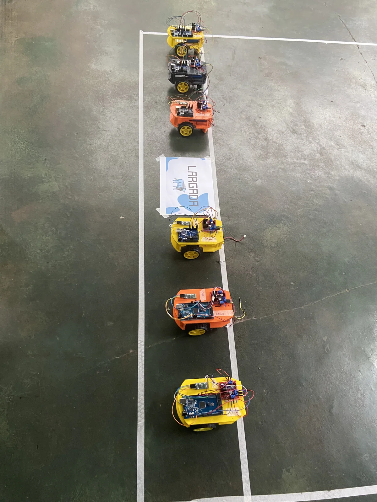
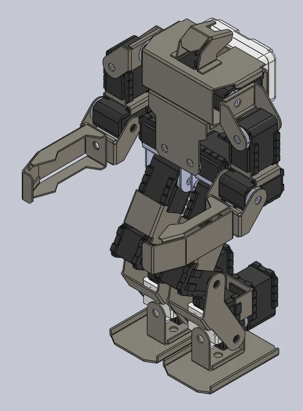
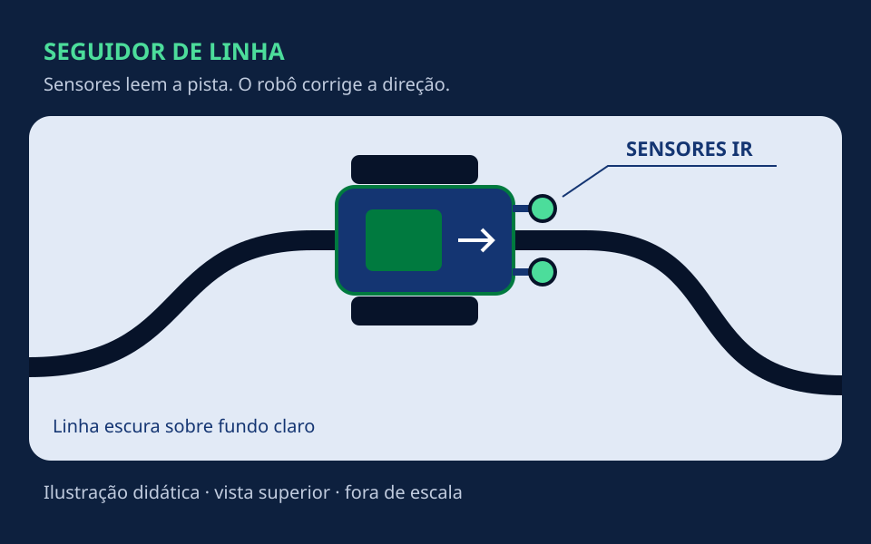
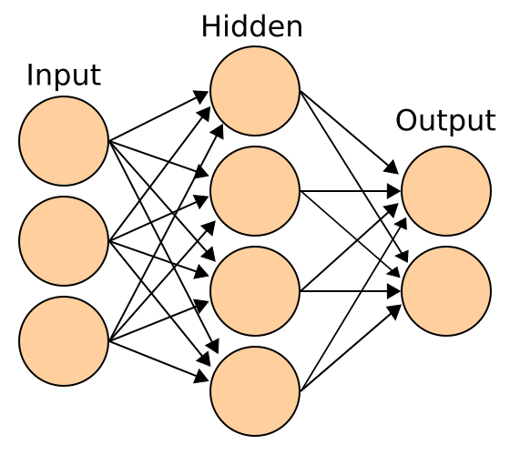

Da curiosidade
à prática.
Robótica se aprende construindo. Explore nossos guias de programação, eletrônica e controle — e leve sua próxima ideia para a bancada.

Conheça um projeto da equipe
Carrinho Bluetooth
com Arduino
Do celular às rodas: entenda como dois motores, um driver e um módulo Bluetooth transformam comandos em movimento. Conheça os componentes e a lógica de funcionamento.
Abrir o projetoExplore por assunto
Biblioteca GAIA
9 guias · 5 áreas de conhecimento
9 guias disponíveis

RobóticaCompetição & IA
RoboCup e Meta 2050
Futebol de robôs e a missão de superar a seleção humana campeã mundial até 2050.
Ler guiaProjeto GAIA
Carrinho Bluetooth
Do comando no celular ao movimento: Arduino, driver e dois motores trabalhando juntos.
Ler guia
RobóticaProjeto guiado
Robô seguidor de linha
Como sensores leem a pista e orientam um robô autônomo. Da montagem aos primeiros testes.
Ler guia Arduino
ArduinoFundamentos
Arduino e hardware
Entradas, saídas e programação para tirar seu primeiro circuito do papel.
Ler guia
IAFundamentos
Inteligência artificial
Entenda dados, aprendizado e como a inteligência artificial se conecta à robótica.
Ler guia Drones
DronesFundamentos
Como os drones voam
Conheça as forças, os movimentos e o controle que mantêm um drone no ar.
Ler guia IA
IAAplicação prática
Visão computacional
De pixels a decisões: como um robô pode interpretar imagens de uma câmera.
Ler guia Robótica
RobóticaControle
Controle PID
Veja como os termos proporcional, integral e derivativo ajudam a corrigir erros.
Ler guia Eletrônica
EletrônicaNa bancada
Guia de solda
Ferramentas, preparo da bancada e técnicas para fazer conexões elétricas confiáveis.
Ler guiaNenhum guia encontrado
Tente outro termo ou veja todos os assuntos.
Créditos das capas de Arduino e IA
Foto: SparkFun Electronics / Wikimedia Commons · CC BY 2.0, sem alterações.
{kind=link}
Diagrama: Cburnett e colaboradores / Wikimedia Commons · CC BY-SA 3.0, sem alterações.
{kind=link}